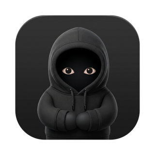
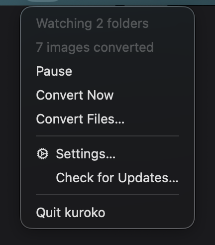
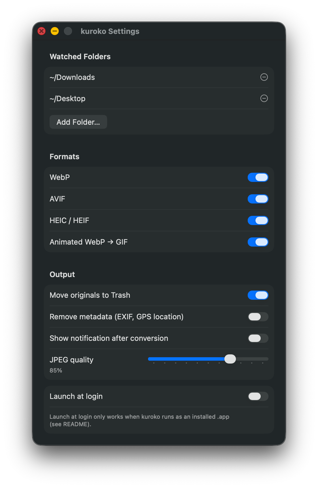

kuroko
Automatically converts WebP, AVIF & HEIC to JPEG, PNG or GIF.
A tiny menu bar app for macOS that silently converts images landing in your Downloads into formats everything understands — WebP, AVIF and HEIC in; JPEG, PNG or GIF out. And when a file can't wait: drag it onto the menu bar icon and convert it on the spot.
Download for macOSFree & open source · macOS 14+ · unsigned build: after first launch is blocked, allow it under System Settings → Privacy & Security → “Open Anyway”
Automatic
Watches Downloads and Desktop (or any folders you pick) and converts new images the moment they appear.
Drag & drop anything
Drop images — or whole folders — onto the menu bar icon. A small panel lets you pick the output format, quality and destination before converting.
Smart about formats
JPEG for photos, PNG when there's transparency to preserve, GIF for animated WebPs — and dropped files can be any format your Mac can read, PNG and JPEG included.
Safe & quiet
Originals go to the Trash, not into the void. No Dock icon, no notifications — just a Pause switch and a Convert Now sweep when you want them.

